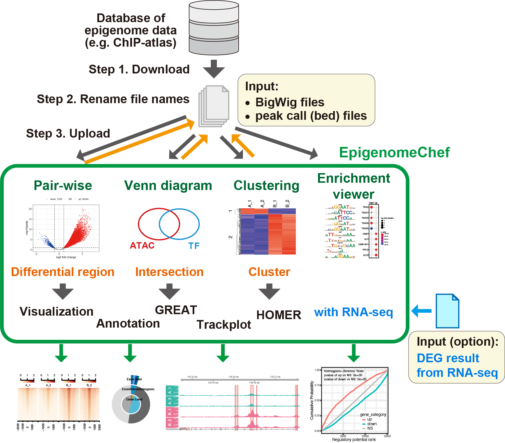
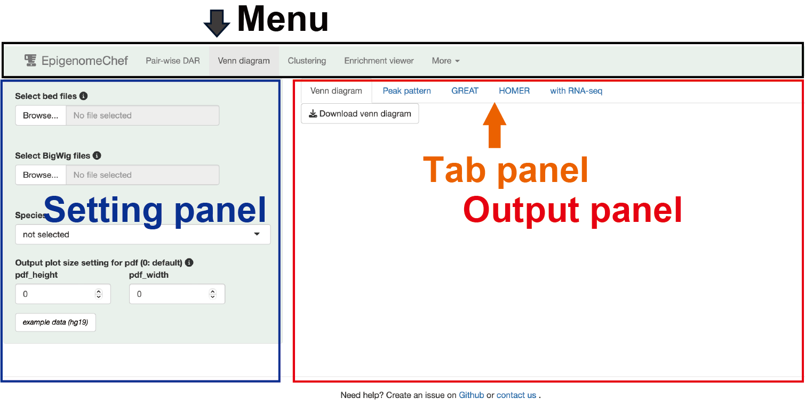
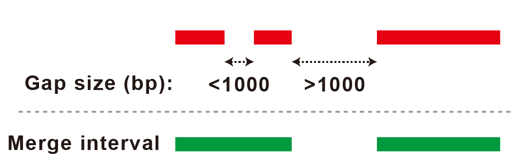
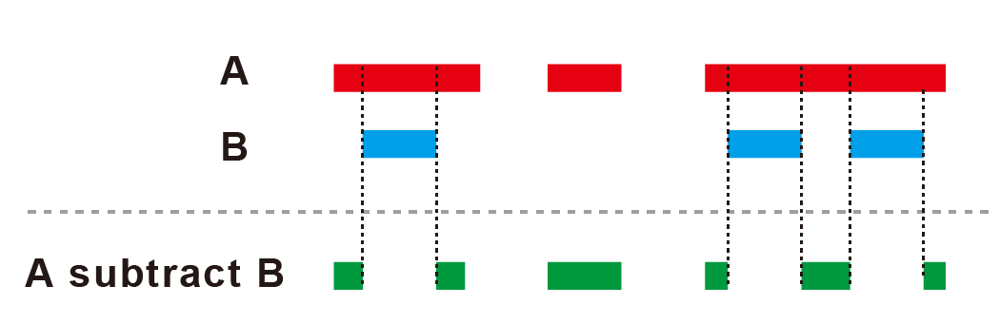
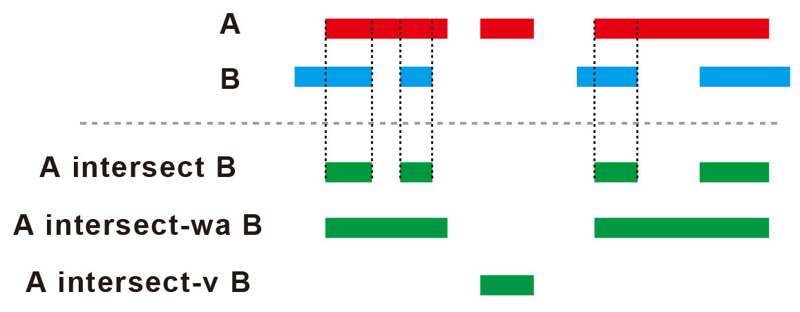
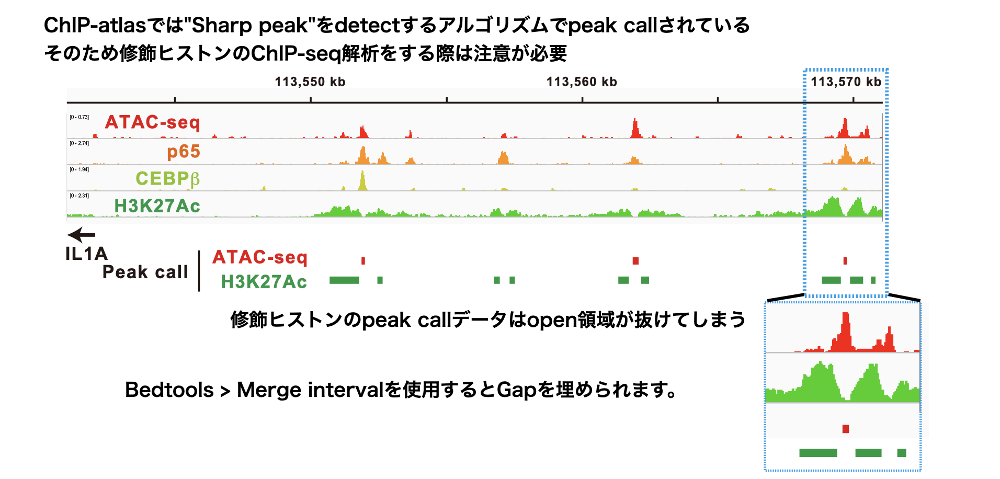
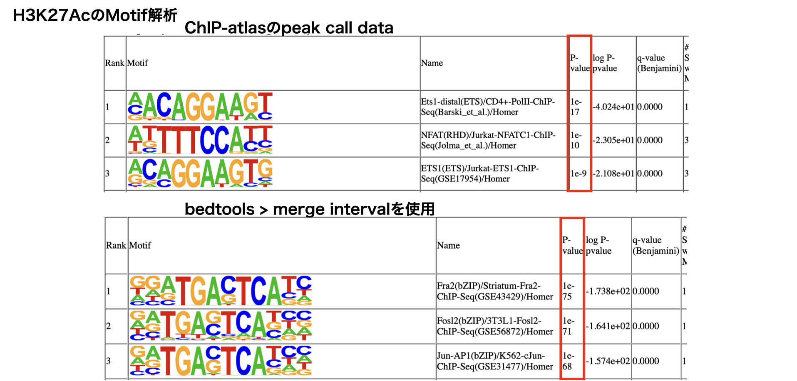

EpigenomeChef manual
23/08/31 23:17
概要

EpigenomeChefは、ChIP-seqやATAC-seqにより得たカバレッジデータ(.BigWig)及びピークコールデータ(.bed)を自動的に統計解析・可視化するウェブアプリです。
単一のデータセットの解析だけでなく、複数のデータセットの結果を統合解析(エピゲノムデータの統合解析)することも可能です。
ChIP-seq, ATAC-seq,
Bisulfite-seqのデータベースであるChIP-atlasからダウンロードしたデータをそのまま使用することができます(事前にファイル名を変更する必要があります。詳細はInput
fileの共通ルール・注意点)。
また、RNA-seqデータから得た遺伝子発現変動(DEG)解析結果を同時にアップロードすることで、トランスクリプトーム解析との統合解析も可能です。
EpigenomeChefは、Docker imageをインストールすることで使用可能です。
0.（Docker環境がない場合）Dockerのインストール
インストール方法は以下のページが詳しいです。
Windows:https://sukkiri.jp/technologies/virtualizers/docker/docker-win_install.html
Mac:https://matsuand.github.io/docs.docker.jp.onthefly/desktop/mac/install/
1.
EpigenomeChefのインストール（一度実行すれば以後必要ありません）
注意点：HOMERはリファレンスゲノムのファイルサイズが大きいため、リファレンス毎にdocker
imageを分割しています。解析したいデータセットの種に対応するdocker
imageをインストールしてください。
HOMER human (hg19)対応 (required
storage size: 18Gb)
docker pull omicschef/epigenomechef:hg19v1.0.4-betaHOMER mouse (mm10)対応 (required storage size: 17Gb)
docker pull omicschef/epigenomechef:mm10v1.0.4-beta2. コンテナの作成（実行コマンドの入力）
HOMER
human (hg19)対応
docker run --rm -p 3838:3838 omicschef/epigenomechef:hg19v1.0.4-betaHOMER mouse (mm10)対応
docker run --rm -p 3838:3838 omicschef/epigenomechef:mm10v1.0.4-betaブラウザでhttp://localhost:3838を立ち上げる。
解析終了後はコンテナを削除してください。
If you need help, please create an issue on Github or contact us.
本アプリは以下のセクションにより構成されます。
Pair-wise (２群間比較のdifferential accessible region解析)
Venn diagram (ゲノム領域の位置情報の重ね合わせの解析)
Clustering (クラスタリング解析、k-means clusteringを用いたゲノム領域の分類・解析)
Enrichment viewer (ゲノム領域の機能解析・モチーフ解析)
More（その他の便利機能やReferenceなど）
アプリはメニュー、セッティングパネル、アウトプットパネルの3種類のパネルで構成されています。
各セクションはアプリ上部のメニューボタンをクリックすることで移動できます。
解析を実行するファイルは、セッティングパネルからアップロードすることができます。
解析は、アウトプットパネルのタブパネルをクリックすることで実行されます。

Input fileの共通ルール・注意点
拡張子
カバレッジデータはBigWig file (.BigWig or .bw)、またはBam file
(.bam)が利用可能です。 ピークコールデータはnarrowPeak file
(.narrowPeak)、またはbed file (.bed)が利用可能です。 RNA-seq DEG result
fileはタブ区切りtxt file (.txt)、カンマ区切りcsv file
(.csv)、エクセルファイル (.xlsx)が利用可能です。
BigWig fileの形式
NormalizeされたBigWig file (例: Reads per million (RPM))を使用してください。
BigWig fileおよびBam fileのファイル名
ファイル名はFigure中のサンプル名として使用されます。
ハイフン”-“、スラッシュ”/“、コロン”:“、スペース”
“はファイル名に含めないでください。
長すぎるファイル名はFigure作成に悪影響を及ぼすため、シンプルなファイル名を推奨します。
サンプル名のn数（replicate number）は、アンダーバー「 _
」を用いて表記してください。
アンダーバー「 _
」は、n数の表記以外では使用できません。
Peak call fileおよびBed fileのファイル名
Pair-wise DAR、Clustering
サンプル名のn数（replicate number）は、アンダーバー「 _ 」を用いて表記してください。
アンダーバー「 _ 」は、n数の表記以外では使用できません。Venn diagram、Enrichment viewer、Bedtools
ファイル名はFigure中のサンプル名として使用されます。
長すぎるファイル名はFigure作成に悪影響を及ぼすため、シンプルなファイル名を推奨します。
同時アップロードの注意点
異なるフォルダに含まれるファイルは同時にアップロードできません。
同時にアップロードしたいファイルは、同一のフォルダにまとめてください。
Output fileの共通ルール・注意点
データの保存
ダウンロードボタンを押すことで、テーブルデータやグラフが保存されます。
表データはタブ区切りtxt
file(.txt)、グラフはイラストレーターで編集可能なPDFファイルで保存されます。
HOMER
reportのみ、zip形式で複数のファイルが保存されます。
保存されるグラフのサイズ調整
Setting panelの「Output plot size setting for
pdf」を調整することで保存される図のサイズを変更できます。
グラフ内で隣り合う文字が重なってしまう場合やグラフの余白が大きすぎる場合にパラメーターを調整して下さい。
パラメーターの値が0の場合、デフォルトサイズで保存されます。
デフォルトサイズは、図の種類によって異なります。詳細は、アプリ内のポップアップからご覧ください。
Pair-wise DAR
２群間の比較解析を実行します。DAR（Differential accessible region）の同定・可視化・機能解析結果を出力します。
Setting

Input format
重要な選択肢は以下の２点です。
- input: BigWig fileまたはBam fileの選択
- Genomic region: Genome-wideまたはPromoterの選択
Input
- BigWig fileを選ぶ場合
BigWig fileは必ずnormalizedされたデータを使用してください(例：RPM)。
二群間の統計解析はNormalized count dataの解析が可能なLimmaを実行します。 - Bam fileを選ぶ場合
Sequence情報（single-end or paired-end）が必要となります。
二群間の統計解析はDESeq2を実行します。
各サンプルのリード数が揃っている場合は、BigWig fileを用いた解析より精度の高い結果が得られます。しかし、各サンプルのリード数が大きく異なる場合は、解析に大きな誤差が生じることがあります。 - Count file + BigWig fileを選ぶ場合
過去にPair-wise DARによる解析を実行し、カウントファイルを得ている場合のみ使用できます。
このモードを用いることで、BigWigファイルからカウントデータを抽出するステップを省略することができます。
Type:カウントファイルを作成した条件によって変更してください。BigWigファイルをインプットとした場合はNormalized count、Bamファイルをインプットとした場合はRaw countを選択してください。 Genomic regionやFilterは過去の解析の条件と合わせてください。 peak patternやトラックプロットを書きたい場合は、BigWigファイルもアップロードする必要があります。
Genomic region
Genome-wideを選ぶ場合
Peak call fileのアップロードが必要となります。
アップロードしたBigWigファイルに対応する全てのpeak call fileをアップロードしてください。
再現性のあるピーク領域に絞りこんで解析するために、２ファイル以上で共通してピークコールされた領域のみを参照・カウント化します。Filter
Reproducible peaks: 各条件に関して再現性のあるピークコール領域のみを抽出します（最低 n = 2でピークコールされる領域）。
（例1：A_1 有、A_2 有、B_1 無、B_2 無 → reproducible、例2：A_1 無、A_2 無、B_1 有、B_2 有 → reproducible、例2：A_1 有、A_2 無、B_1 無、B_2 有 → NOT reproducible） ALL peaks: ピークコールされた全ての領域をカウント化します。Promoterを選ぶ場合
Peak call fileのアップロードは不要となります。
Promoter領域の範囲は自由に変更可能です（default: upstream = 500 bp, downstream = 500 bp）。
Speciesの選択が必須となります。
なお、アップロードするファイル名はInput
fileの共通ルール・注意点に記載されたルールをお守りください。
Species
適切な種（リファレンス）を選択することで以下の解析が実行されます。
- Promoter領域の解析
- トラックプロット、peak distribution、GREAT, HOMER, with RNAseqの実行
Cut-off conditions
Fold change, FDRの閾値が設定できます。
Output
Input Data
アップロードしたファイル名を表示します。
カウントデータ作成後、カウントデータを表示します。
-
Sample order
BigWigファイルの順番を並び替えることができます。
※ドラッグ&ドロップはできません。テキストを消すようにdeleteボタンで削除し、解析したい順番になるように再入力してください。

Result overview
Clustering analysis, volcano plot, heatmap
Principal Component Analysis (PCA)、Multi-Dimensional Scaling (MDS),
ward.D2による階層的クラスタリングの3種類のクラスタリング解析を実行します。

DAR解析の結果をvolcano
plotとheatmapで表示します。
DAR
resultテーブルの項目をクリックすると、volcano
plotで表示される点のうち、選択した領域だけを緑色で表示します。
Trackplotパネル
DAR
resultテーブルの項目をクリックすると、選択した領域及びその近傍遺伝子のトラックプロットを表示します。
トラックプロットのハイライト（赤）は、選択した領域を示しています。
トラックプロットのピークの高さは、peak
rangeで変更可能です。
トラックプロットに追加のデータを表示したい場合には、select
additional bigwig filesからデータをアップロードしてください。

volcanoプロット中の興味あるゲノム領域を囲うことで、そのゲノム領域の情報だけを抜き出したテーブルデータを表示することもできます。

Up_peaks及びDown_peaksパネル
表データとして、DAR (bed file)が出力されます。
ダウンロードしたbed fileはVenn
diagramやClustering、Enrichment
viewerセクションにそのままアップロード・再解析が可能です。
Peak distribution
Up及びDownしたDARのannotation情報を円グラフとして出力します。
円グラフは次の3種類のレベルで表示されます。
Gene Level
Promoter, Downstream, Gene body, Distal intergenicExon/Intron/Intergenic
Exon, Intron, IntergenicExon Level
5’ UTR, 3’ UTR, CDS, Other exon

Peak pattern
Peak heatmap (Peakの頂点を中心にDARを並べたheatmapで表示)とline plot
(各サンプルのDARにおけるピークの平均値をline
plotで表示)を出力します。
追加のデータを表示したい場合には、select additional bigwig
filesからデータをアップロードしてください。

GREAT
GREAT (Genomic Regions Enrichment of Annotations
Tool)をベースとしたエンリッチメント解析によりDARの機能を同定します。
解析に使用できる遺伝子セットは、以下の通りです。
MSigDB
hallmark gene
KEGG
Reactome
PID
(Pathway Interaction Database)
BioCarta
WikiPathways
GO (biological process, cellular
component, and molecular function)
Human phenotype ontology
DoRothEA regulon
(activator)
DoRothEA regulon
(repressor)
Transcription
factor targets
miRNA
target
注) 転写因子の予測解析はDoRothEA
regulonの使用を推奨します。
解析は、rGREATに依存します。

HOMER
HOMER (Hypergeometric Optimization of Motif
EnRichment)をベースとしたエンリッチメント解析により、DARに含まれるDNA結合モチーフを同定します。
Type of enrichment analysis
“known motif”: known motifのみ解析します。
“known + unknown
motif”: known motifに加えてunknown motifの解析も行います。
Type of the region for motif finding
“given (exact size)”:
各ピークの全領域を解析します。修飾ヒストンのようなbroadなpeakの解析に有効です。
“custom size”: ピークの中央から指定したサイズ(default:
200)に絞って解析します。ATAC-seqやDNA結合タンパク質の解析に有効です。
Background sequence
“ramdom”:ゲノム領域からランダムにbackground
sequenceを抽出します。
“peak calling
files”:解析対象を除いたピーク領域をbackgroundとして利用します（例：up
DARを解析する際はNS regionとdown
DARをbackgroundとして利用）。randomと比べてよりspecificなmotifが予測できる可能性があります。
Download homer report
HOMERの実行結果がzip形式で一括downloadできます。

with RNAseq
RNA-seqのDEG result
fileをアップロードすることで、DAR(epigenome)とDEG(transcriptome)の統合解析ができます。
RNA-seqのDEG result fileのフォーマットは以下の通りです。
- 拡張子は、タブ区切りtxt、カンマ区切りcsv、エクセルxlsxのいずれか
- 1行目はgene symbolまたはENSEMBL ID
- カラム名が「log2FoldChange」及び「padj」の列を含む
上記の条件を満たせば、bulk
RNA-seqまたはscRNA-seqのデータが使用できます。
注意点: Log2FoldChangeは「A vs
B」の場合、Log2(A/B)で計算されるため、Upは負の値となります。RNAseqChef以外で取得したDEG
resultファイルを利用される場合は、正負の値に注意して下さい。

Regulatory Potential (RP)をベースとした解析について
Epigenome(DAR)の解析結果では以下のようなケースがあります。
１遺伝子に対して
- 複数のDARが近傍に局在
- upとdownの両方のDARが局在
遺伝子発現とエピゲノム情報を統合解析するためには、まずは上記のような１遺伝子対して複数存在するエピゲノム情報を統合し、一つのスコアにまとめる必要があります。
本アプリでは、エピゲノム情報を一つのスコアにまとめるためにRegulatory
Potential (RP)の理論を採用しています。
RPスコアはピークの位置がTSSに近いほど高く、TSSから離れるほど低くなるように計算されます。
RPスコアに反映されるTSSからのピークの最大距離は100kb（Regulatory
range (distance (kb) from TSS)より変更可能）です。
RNAseqのDEGのcutoffは、Fold change cutoff for RNA-seq
data及びFDR cutoff for RNA-seq
dataより設定できます（defaultはfold change = 1.5, fdr =
0.05）。
Boxplot
RPの値を指標に遺伝子を分類し、各グループのlog2FoldChangeの値をプロットします。
RPの分類はRPが１より大きい遺伝子(RP > 1)、RPが１より小さい遺伝子(RP
< -1)、その他(Others)です。
統計解析はTukeyHSDを実行します。*
p<0.05, ** p<0.01, *** p<0.001
着目するEpigenome変化がどの程度遺伝子発現変動に寄与するかがわかります。

Barplot
DEGのうち、RPが0以上(または0以下)の遺伝子がどの程度存在するかを積み上げ棒グラフで表示する。
また逆に、RPが0以上(または0以下)の遺伝子のうち、DEGがどの程度存在するかを表示する。
KS plot
RPスコアが高い順に遺伝子を並べて、３つのグループの（遺伝子発現が増加した遺伝子(up)、減少した遺伝子(down)、有意差が見られなかった遺伝子(NS)）の分布を比較します。
例えば、RPスコアが高いほど遺伝子発現が増加する傾向にある場合、赤色で示すupの線は灰色で示すNSの線より左側で立ち上がります。
Kolmogorov-Smirnov testsにより有意差検定をします。
着目するEpigenome変化（RPスコア）と遺伝子発現変動の相関関係がわかります。

Result tableパネル
TranscriptomeとEpigenomeの情報をリンクさせた分類結果を出力します。
例えば、「RNA及びEpigenomeが共にupした遺伝子」や「RNA及びEpigenomeが共にdownした遺伝子」など(Group(RNA-Epigenome)より選択可能)の情報をテーブルデータとして出力します。
各グループに対応するDARは、bed形式でダウンロードすることも可能です。
ダウンロードしたbed fileはVenn
diagramやClustering、Enrichment
viewerセクションにそのままアップロード・再解析が可能です。
興味ある項目をクリックすると、Trackplotパネルに選択したDAR及び近傍遺伝子のトラックプロットが出力されます。

Functional enrichment analysisパネル
興味あるグループを選択すると、エンリッチメント解析を実行します。
このエンリッチメント解析は、RNA-seq解析におけるエンリッチメント解析方法を使用します（GREATをベースとしたエンリッチメント解析とは異なります）。
解析は、ClusterProfilerに依存します。

Combined Heatmap
UpおよびDownしたPeakに対応するRNAseqのカウントデータやFoldChange、ChIP-seqやATAC-seqのPeakパターンをHeatmapで同時に可視化します。
STARTボタンを押すと、解析を実行します。

Venn diagram
Venn diagramにより共通・非共通のゲノム領域を同定します。ベン図の各領域のアノテーション・可視化・機能解析結果を出力します。
Setting

Input format
Input
- Bed files
Venn diagram解析において必ず必要となるファイルです。
ファイル名はFigure中のサンプル名として使用されます。
長すぎるファイル名はFigure作成に悪影響を及ぼすため、シンプルなファイル名を推奨します。
最大アップロード数は5ファイルです。 - BigWig files
Trackplotやpeak pattern (peak heatmapやline plot)を出力する場合は必要となります。
その他の機能においてはアップロードは不要です。 - Sample order
BigWigファイルの順番を並び替えることができます。
※ドラッグ&ドロップはできません。テキストを消すようにdeleteボタンで削除し、解析したい順番になるように再入力してください。
Species
適切な種（リファレンス）を選択することで以下の解析が実行されます。
- トラックプロット、peak distribution、GREAT, HOMER, with RNAseqの実行
Output
Venn diagram
アップロードしたbed fileのoverlap領域を同定します。
結果として、Venn diagramを出力します。
また、Bigwigファイルをアップロードした場合、各intersectのピークパターンがラインプロットで表示されます。

#### Lineplot of
intersections (comparison between intersections)
アップロードしたそれぞれのBigWigファイルに関して得られたintersection部分の平均値をプロットします。
一つのBigWigファイル内におけるintersection部分のピークの高さを比較できます。
Lineplot of intersections (comparison between bigwig)
アップロードした全てのbigwigファイルに関してintersection部分のピークの高さを比較できます。

Peak pattern
Select intersectから選択したvenn図の領域に関してPeak
patternを分析します。
intersectのハイフン”-“はoverlapを意味します。。
例：A.bedとB.bedの解析の場合。
A: Bと重複しないAの領域
B:
Aと重複しないBの領域
A-B: AとBのoverlap領域
Peak heatmapとline plot
BigWig fileをアップロードした場合、表示されます。
選択した領域に関して中央から前後2000kbの領域をheatmap及びline
plotとして出力します。
さらに追加のデータを表示したい場合には、select additional bigwig
filesからデータをアップロードしてください。
Peak distribution
Speciesを選択した場合、表示されます。
選択した領域のannotation情報を円グラフとして出力します。
円グラフは次の3種類のレベルで表示されます。
Gene Level
Promoter, Downstream, Gene body, Distal intergenicExon/Intron/Intergenic
Exon, Intron, IntergenicExon Level
5’ UTR, 3’ UTR, CDS, Other exon

Trackplotパネル
selected intersect
dataパネルの項目をクリックすると、選択した項目のトラックプロットを表示します。
トラックプロットのハイライト（赤）は、選択した領域を示しています。
トラックプロットのピークの高さは、peak
rangeで変更可能です。
トラックプロットに追加のデータを表示したい場合には、select
additional bigwig
filesからデータをアップロードしてください。

selected intersect dataパネル
選択した領域の情報が表データとして出力されます。
近傍の遺伝子やannotation情報をtxt fileとしてダウンロード可能です。
また、bed形式としてもダウンロード可能です。ダンロードしたbedファイルはClustering、Enrichment
viewerセクションのインプットとしてアップロード・再解析が可能です。
GREAT
GREAT (Genomic Regions Enrichment of Annotations
Tool)をベースとしたエンリッチメント解析により、Select
intersectから選択したvenn図の領域の機能を同定します。
解析に使用できる遺伝子セットは、以下の通りです。
MSigDB
hallmark gene
KEGG
Reactome
PID
(Pathway Interaction Database)
BioCarta
WikiPathways
GO (biological process, cellular
component, and molecular function)
Human phenotype ontology
DoRothEA regulon
(activator)
DoRothEA regulon
(repressor)
Transcription
factor targets
miRNA
target
注) 転写因子の予測解析はDoRothEA
regulonの使用を推奨します。
解析は、rGREATに依存します。

HOMER
HOMER (Hypergeometric Optimization of Motif
EnRichment)をベースとしたエンリッチメント解析により、Select
intersectから選択したvenn図の領域に含まれるDNA結合モチーフを同定します。
Type of enrichment analysis
“known motif”: known motifのみ解析します。
“known + unknown
motif”: known motifに加えてunknown motifの解析も行います。
Type of the region for motif finding
“given (exact size)”:
各ピークの全領域を解析します。修飾ヒストンのようなbroadなpeakの解析に有効です。
“custom size”: ピークの中央から指定したサイズ(default:
200)に絞って解析します。ATAC-seqやDNA結合タンパク質の解析に有効です。
Background sequence
“ramdom”:ゲノム領域からランダムにbackground
sequenceを抽出します。
“bed files”: Background
file(bed形式)をアップロードするためのウィンドウが出現します。 複数のbed
filesをアップロードした場合は、mergeしたファイルをbackground
fileとして利用します。
backgroundファイルのうち、解析対象を除いた領域をbackgroundとして利用します。
randomと比べてよりspecificなmotifが予測できる可能性があります。
Download homer report
HOMERの実行結果がzip形式で一括downloadできます。

with RNAseq
RNA-seqのDEG(発現変動遺伝子) result
fileをアップロードすることで、Select
intersectから選択したvenn図の領域(epigenome)とDEG(transcriptome)の統合解析ができます。
RNA-seqのDEG result fileのフォーマットは以下の通りです。
- 拡張子は、タブ区切りtxt、カンマ区切りcsv、エクセルxlsxのいずれか
- 1行目はgene symbolまたはENSEMBL ID
- カラム名が「log2FoldChange」及び「padj」の列を含む
上記の条件を満たせば、bulk
RNA-seqまたはscRNA-seqのデータが使用できます。
Regulatory Potential (RP)をベースとした解析について
Epigenomeの解析結果では、一つの遺伝子に対して複数のピークがassociateするケースがあります。
遺伝子発現とエピゲノム情報を統合解析するためには、まずは上記のような１遺伝子対して複数存在するエピゲノム情報を統合し、一つのスコアにまとめる必要があります。
本アプリでは、エピゲノム情報を一つのスコアにまとめるためにRegulatory
Potential (RP)の理論を採用しています。
RPスコアはピークの位置がTSSに近いほど高く、TSSから離れるほど低くなるように計算されます。
RPスコアに反映されるTSSからのピークの最大距離は100kb（Regulatory
range (distance (kb) from TSS)より変更可能）です。
RNAseqのDEGのcutoffは、Fold change cutoff for RNA-seq
data及びFDR cutoff for RNA-seq
dataより設定できます（defaultはfold change = 1.5, fdr =
0.05）。
Boxplot
RPの値を指標に遺伝子を分類し、各グループのlog2FoldChangeの値をプロットします。
RPの分類はRPが１より大きい遺伝子(RP > 1)、その他(Others)です。
統計解析はWelch’s t-testを実行します。* p<0.05, ** p<0.01, ***
p<0.001
着目するゲノム領域がどの程度遺伝子発現変動に寄与するかがわかります。

Barplot
DEGのうち、RPが0以上の遺伝子がどの程度存在するかを積み上げ棒グラフで表示する。
また逆に、RPが0以上の遺伝子のうち、DEGがどの程度存在するかを表示する。
KS plot
RPスコアが高い順に遺伝子を並べて、２つのグループの（遺伝子発現が増加した遺伝子(up)、有意差が見られなかった遺伝子(NS)）の分布を比較します。
例えば、RPスコアが高いほど遺伝子発現が増加する傾向にある場合、赤色で示すupの線は灰色で示すNSの線より左側で立ち上がります。
Kolmogorov-Smirnov testsにより有意差検定をします。
着目するゲノム領域（RPスコア）と遺伝子発現変動の相関関係がわかります。
intersect_associatedは選択したintersectに含まれるゲノム領域が近傍に局在する遺伝子です。

Result tableパネル
TranscriptomeとEpigenomeの情報をリンクさせた分類結果を出力します。
例えば、「RNA及びEpigenomeが共にupした遺伝子」や「RNA及びEpigenomeが共にdownした遺伝子」など(Group(RNA-Epigenome)より選択可能)の情報をテーブルデータとして出力します。
venn diagramやmotif解析用にbed形式でダウンロードすることも可能です。
興味ある項目をクリックすると、Trackplotパネルに選択した領域及び近傍遺伝子のトラックプロットが出力されます。

Functional enrichment analysisパネル
興味あるグループを選択すると、エンリッチメント解析を実行します。
このエンリッチメント解析は、RNA-seq解析におけるエンリッチメント解析方法を使用します（GREATをベースとしたエンリッチメント解析とは異なります）。
解析は、ClusterProfilerに依存します。

—
Combined Heatmap
選択したIntersectに対応するRNAseqのカウントデータやFoldChange、ChIP-seqやATAC-seqのPeakパターンをHeatmapで同時に可視化します。
必ずSelect
intersectionからヒートマップを描きたいゲノム領域を選択してください。
セッティングパネルのBigWigファイルのアップロードは必須です。
STARTボタンを押すと、解析を実行します。
Clustering
BigWig fileのクラスタリング解析を実行します。 本セクションの用途は大きく分けて二つあります。 １つ目は、PCAやMDS、dendrogram、correlation plotによるデータの俯瞰です。アップロードしたデータの大まかな類似性を可視化します。 ２つ目は、k-means clusteringを用いた詳細なゲノム領域の分析です。Pair-wise DARやVenn diagramで同定した領域をk-means clusteringを用いて細分化・機能評価を行います。
Setting

Input format
重要な選択肢は以下の１点です。
- Genomic region: Genome-wideまたはPromoterの選択
Genomic region
Genome-wideを選ぶ場合
Bed fileのアップロードが必要となります。
目的がデータの俯瞰の場合は、アップロードしたBigWigファイルに対応する全てのpeak call fileをアップロードしてください。(Pair-wise DARのようなFilter機能はありません。アップロードしたbed fileに含まれる全てのゲノム領域をカウント化します。)
目的がk-means clusteringを用いた詳細なゲノム領域の分析の場合は、Pair-wise DARやVenn diagramなどにより得たbed fileをアップロードしてください。 bedファイルに含まれるゲノム領域のみをカウント化します。 （k-means clusteringを実行できるゲノム領域の数は最大10,000までのため、解析対象となるゲノム領域をある程度絞り込んだbed fileが必要となります。）Filter
Reproducible peaks: 各条件に関して再現性のあるピークコール領域のみを抽出します（最低 n = 2でピークコールされる領域）。
（例1：A_1 有、A_2 有、B_1 無、B_2 無 → reproducible、例2：A_1 無、A_2 無、B_1 有、B_2 有 → reproducible、例2：A_1 有、A_2 無、B_1 無、B_2 有 → NOT reproducible） ただし、n = 1のサンプルに関しては全てのピークコール領域を抽出します。 ALL peaks: ピークコールされた全ての領域をカウント化します。Promoterを選ぶ場合
bed fileのアップロードは不要となります。
Promoter領域の範囲は自由に変更可能です（default: upstream = 500 bp, downstream = 500 bp）。
gene list fileをアップロードすることで、gene list fileに含まれる遺伝子のみを抽出します。解析対象となる遺伝子を絞り込むことができます。
Speciesの選択が必須となります。
なお、アップロードするファイル名はInput
fileの共通ルール・注意点に記載されたルールをお守りください。
Species
適切な種（リファレンス）を選択することで以下の解析が実行されます。
- Promoter領域の解析
- トラックプロット、peak distribution、GREAT, HOMER, with RNAseqの実行
Cut-off conditions
Fold change, FDRの閾値が設定できます。
Output
Input Data
アップロードしたファイル名を表示します。
カウントデータ作成後、カウントデータを表示します。
- Sample
order
BigWigファイルの順番を並び替えることができます。
※ドラッグ&ドロップはできません。テキストを消すようにdeleteボタンで削除し、解析したい順番になるように再入力してください。

Result overview
Principal Component Analysis (PCA)、Multi-Dimensional Scaling (MDS),
ward.D2による階層的クラスタリングの3種類のクラスタリング解析を実行します。
また、pearson’s correlationを計算し、correlation
plotを出力します。

k-means clustering
k-means clusteringを実行します。
解析対象となるゲノム領域の数は、memoryの都合上、最大10,000領域(defaultは2000
loci。Most variable lociで変更可能)までです。
- Select a pair for fold change cut-off
Fold changeでcut-offしたい２群を選択できます。
cut-off後のゲノム領域の数が赤字で表示されるので、その数字を参考にMost variable lociを設定してください。 - k-means number
クラスターの数を設定します。 - Most variable loci
cut-off後のゲノム領域の数がMost variable lociで指定した数値を上回る場合、中央絶対偏差(MAD)が大きい領域領域を抽出して解析します。 - Order of clusters on heatmap
ヒートマップ上のクラスターの順番を変更することができます。
※ デフォルトで階層的クラスタリングにより事前にある程度綺麗に並び替える機能を備えていますが、マニュアル操作で並び替えたい時にご利用ください。

cluster_listから興味あるClusterを選択することで、さらに詳細な解析ができます。
なお、cluster_listで複数のClusterを選択した場合は、選択した全てのClusterを同一のClusterとみなして解析します（それぞれのクラスターを個別に解析するわけではありません）。
Peak pattern
選択したClusterのPeak heatmapとline plotを出力します。
追加のデータを表示したい場合には、select additional bigwig
filesからデータをアップロードしてください。

Trackplotパネル
selected cluster
dataパネルの項目をクリックすると、選択した項目のトラックプロットを表示します。
トラックプロットのハイライト（赤）は、選択した領域を示しています。
トラックプロットのピークの高さは、peak
rangeで変更可能です。
トラックプロットに追加のデータを表示したい場合には、select
additional bigwig
filesからデータをアップロードしてください。

with RNAseq
RNA-seqのDEG(発現変動遺伝子) result
fileをアップロードすることで、k-means cluster
listから選択したClusterの領域(epigenome)とDEG(transcriptome)の統合解析ができます。
RNA-seqのDEG result fileのフォーマットは以下の通りです。
- 拡張子は、タブ区切りtxt、カンマ区切りcsv、エクセルxlsxのいずれか
- 1行目はgene symbolまたはENSEMBL ID
- カラム名が「log2FoldChange」及び「padj」の列を含む
上記の条件を満たせば、bulk
RNA-seqまたはscRNA-seqのデータが使用できます。
Regulatory Potential (RP)をベースとした解析について
Epigenomeの解析結果では、一つの遺伝子に対して複数のピークがassociateするケースがあります。
遺伝子発現とエピゲノム情報を統合解析するためには、まずは上記のような１遺伝子対して複数存在するエピゲノム情報を統合し、一つのスコアにまとめる必要があります。
本アプリでは、エピゲノム情報を一つのスコアにまとめるためにRegulatory
Potential (RP)の理論を採用しています。
RPスコアはピークの位置がTSSに近いほど高く、TSSから離れるほど低くなるように計算されます。
RPスコアに反映されるTSSからのピークの最大距離は100kb（Regulatory
range (distance (kb) from TSS)より変更可能）です。
RNAseqのDEGのcutoffは、Fold change cutoff for RNA-seq
data及びFDR cutoff for RNA-seq
dataより設定できます（defaultはfold change = 1.5, fdr =
0.05）。
Boxplot
RPの値を指標に遺伝子を分類し、各グループのlog2FoldChangeの値をプロットします。
RPの分類はRPが１より大きい遺伝子(RP > 1)、その他(Others)です。
統計解析はWelch’s t-testを実行します。* p<0.05, ** p<0.01, ***
p<0.001
着目するゲノム領域がどの程度遺伝子発現変動に寄与するかがわかります。

Barplot
DEGのうち、RPが0以上の遺伝子がどの程度存在するかを積み上げ棒グラフで表示する。
また逆に、RPが0以上の遺伝子のうち、DEGがどの程度存在するかを表示する。
KS plot
RPスコアが高い順に遺伝子を並べて、２つのグループの（遺伝子発現が増加した遺伝子(up)、有意差が見られなかった遺伝子(NS)）の分布を比較します。
例えば、RPスコアが高いほど遺伝子発現が増加する傾向にある場合、赤色で示すupの線は灰色で示すNSの線より左側で立ち上がります。
Kolmogorov-Smirnov testsにより有意差検定をします。
着目するゲノム領域（RPスコア）と遺伝子発現変動の相関関係がわかります。
cluster_associatedは選択したclusterに含まれるゲノム領域が近傍に局在する遺伝子です。

Result tableパネル
TranscriptomeとEpigenomeの情報をリンクさせた分類結果を出力します。
例えば、「RNA及びEpigenomeが共にupした遺伝子」や「RNA及びEpigenomeが共にdownした遺伝子」など(Group(RNA-Epigenome)より選択可能)の情報をテーブルデータとして出力します。
venn diagramやmotif解析用にbed形式でダウンロードすることも可能です。
興味ある項目をクリックすると、Trackplotパネルに選択した領域及び近傍遺伝子のトラックプロットが出力されます。

Functional enrichment analysisパネル
興味あるグループを選択すると、エンリッチメント解析を実行します。
このエンリッチメント解析は、RNA-seq解析におけるエンリッチメント解析方法を使用します（GREATをベースとしたエンリッチメント解析とは異なります）。
解析は、ClusterProfilerに依存します。

Enrichment viewer
bed
fileに含まれるゲノム領域に対してエンリッチメント解析を実行します。
Venn diagramやk-means
clusteringの結果を用いることで、同定したグループ・クラスターの機能やモチーフを比較・可視化します。
Setting

Input format
Input
- Bed files
Enrichment viewerにおいて必ず必要となるファイルです。
ファイル名はFigure中のサンプル名として使用されます。
長すぎるファイル名はFigure作成に悪影響を及ぼすため、シンプルなファイル名を推奨します。
Species
適切な種（リファレンス）の選択が必須です。
Output
Input list
アップロードしたファイル名を表示します。

GREAT
GREAT (Genomic Regions Enrichment of Annotations
Tool)をベースとしたエンリッチメント解析により、アップロードしたbed
fileに含まれるゲノム領域の機能をそれぞれ同定・可視化します。
解析に使用できる遺伝子セットは、以下の通りです。
MSigDB
hallmark gene
KEGG
Reactome
PID
(Pathway Interaction Database)
BioCarta
WikiPathways
GO (biological process, cellular
component, and molecular function)
Human phenotype ontology
DoRothEA regulon
(activator)
DoRothEA regulon
(repressor)
Transcription
factor targets
miRNA
target
注) 転写因子の予測解析はDoRothEA
regulonの使用を推奨します。
解析は、rGREATに依存します。

HOMER
HOMER (Hypergeometric Optimization of Motif
EnRichment)をベースとしたエンリッチメント解析により、アップロードしたbed
fileに含まれるゲノム領域に含まれるDNA結合モチーフをそれぞれ同定します。
Type of enrichment analysis
“known motif”: known motifのみ解析します。
“known + unknown
motif”: known motifに加えてunknown motifの解析も行います。
Type of the region for motif finding
“given (exact size)”:
各ピークの全領域を解析します。修飾ヒストンのようなbroadなpeakの解析に有効です。
“custom size”: ピークの中央から指定したサイズ(default:
200)に絞って解析します。ATAC-seqやDNA結合タンパク質の解析に有効です。
Background sequence
“ramdom”:ゲノム領域からランダムにbackground
sequenceを抽出します。
“bed files”: Background
file(bed形式)をアップロードするためのウィンドウが出現します。 複数のbed
filesをアップロードした場合は、mergeしたファイルをbackground
fileとして利用します。
backgroundファイルのうち、解析対象を除いた領域をbackgroundとして利用します。
randomと比べてよりspecificなmotifが予測できる可能性があります。
Download homer report
HOMERの実行結果がzip形式で一括downloadできます。
—
Combined Heatmap
Bed
fileに含まれる位置情報に対応するRNAseqのカウントデータやFoldChange、ChIP-seqやATAC-seqのPeakパターンをHeatmapで同時に可視化します。
タブパネル上部のBigWigファイルのアップロードは必須です。
STARTボタンを押すと、解析を実行します。

More
bedtools
ゲノムの位置情報を扱うBed fileの演算が可能です。
処理可能なファイル様式はbed形式 (.bedまたは.narrowPeak)のみです。
全機能はbedtorchに依存します。
Merge interval
隣り合う領域のサイズが指定したサイズ(Gap
sizeより変更可能)以下の場合、隣り合う領域をマージしたファイルを作成します。

Subtract
AからBの領域を引いたファイルを作成します。

Intersect
AのうちBとoverlapする領域だけを抽出したファイルを作成します。
(-wa option)
Bとoverlapする領域をそのまま抽出したファイルを作成します。
(-v
option) Bとoverlapしない領域のみを抽出したファイルを作成します。

Tips
HOMER: Background sequenceの差
例: ATAC-seqのサンプルでpair-wise DARを実行 
ChIP-atlasのデータの注意点：修飾ヒストンのChIP-seqデータの解析


Reference
Shiny framework
- Winston Chang, Joe Cheng, JJ Allaire, Carson Sievert, Barret Schloerke, Yihui Xie, Jeff Allen, Jonathan McPherson, Alan Dipert and Barbara Borges (2021). shiny: Web Application Framework for R. R package version 1.7.1. https://CRAN.R-project.org/package=shiny
- Eric Bailey (2022). shinyBS: Twitter Bootstrap Components for Shiny. R package version 0.61.1. https://CRAN.R-project.org/package=shinyBS
- Yihui Xie, Joe Cheng and Xianying Tan (2022). DT: A Wrapper of the JavaScript Library ‘DataTables’. R package version 0.23. https://CRAN.R-project.org/package=DT
DESeq2 and limma (for differential accessibility region analysis)
- Love, M.I., Huber, W., Anders, S. Moderated estimation of fold change and dispersion for RNA-seq data with DESeq2 Genome Biology 15(12):550 (2014)
- Ritchie, M.E., Phipson, B., Wu, D., Hu, Y., Law, C.W., Shi, W., and Smyth, G.K. (2015). limma powers differential expression analyses for RNA-sequencing and microarray studies. Nucleic Acids Research 43(7), e47.
ggdendro (for dendrograms)
- Andrie de Vries and Brian D. Ripley (2020). ggdendro: Create Dendrograms and Tree Diagrams Using ‘ggplot2’. R package version 0.1.22. https://CRAN.R-project.org/package=ggdendro
ggcorrplot (for correlation plot)
- Kassambara A (2022). ggcorrplot: Visualization of a Correlation Matrix using ‘ggplot2’. R package version 0.1.4, https://CRAN.R-project.org/package=ggcorrplot.
rGREAT, clusterProfiler, DOSE, msigdbr, dorothea (for enrichment analysis)
- Gu Z (2022). rGREAT: GREAT Analysis - Functional Enrichment on Genomic Regions. https://github.com/jokergoo/rGREAT, http://great.stanford.edu/public/html/.
- T Wu, E Hu, S Xu, M Chen, P Guo, Z Dai, T Feng, L Zhou, W Tang, L Zhan, X Fu, S Liu, X Bo, and G Yu. clusterProfiler 4.0: A universal enrichment tool for interpreting omics data. The Innovation. 2021, 2(3):100141
- Guangchuang Yu, Li-Gen Wang, Guang-Rong Yan, Qing-Yu He. DOSE: an R/Bioconductor package for Disease Ontology Semantic and Enrichment analysis. Bioinformatics 2015 31(4):608-609
- Dolgalev I (2022). msigdbr: MSigDB Gene Sets for Multiple Organisms in a Tidy Data Format. R package version 7.5.1, https://CRAN.R-project.org/package=msigdbr.
- Garcia-Alonso L, Holland CH, Ibrahim MM, Turei D, Saez-Rodriguez J. ‘Benchmark and integration of resources for the estimation of human transcription factor activities.’ Genome Research. 2019. DOI: 10.1101/gr.240663.118.
AnnotationDbi, Rpackages for annotation (for genome wide annotation)
- Hervé Pagès, Marc Carlson, Seth Falcon and Nianhua Li (2020). AnnotationDbi: Manipulation of SQLite-based annotations in Bioconductor. R package version 1.52.0. https://bioconductor.org/packages/AnnotationDbi
- Marc Carlson (2020). org.Hs.eg.db: Genome wide annotation for Human. R package version 3.12.0.
- Marc Carlson (2020). org.Mm.eg.db: Genome wide annotation for Mouse. R package version 3.12.0.
- Marc Carlson (2022). org.Rn.eg.db: Genome wide annotation for Rat. R package version 3.15.0.
- Marc Carlson (2022). org.Xl.eg.db: Genome wide annotation for Worm. R package version 3.15.0.
- Marc Carlson (2022). org.Dm.eg.db: Genome wide annotation for Rat. R package version 3.15.0.
- Marc Carlson (2022). org.Ce.eg.db: Genome wide annotation for Worm. R package version 3.15.0.
- Marc Carlson (2022). org.Bt.eg.db: Genome wide annotation for Bovine. R package version 3.15.0.
- Marc Carlson (2022). org.Cf.eg.db: Genome wide annotation for Canine. R package version 3.15.0.
- Marc Carlson (2022). org.Dr.eg.db: Genome wide annotation for Zebrafish. R package version 3.15.0.
- Marc Carlson (2022). org.Gg.eg.db: Genome wide annotation for Chicken. R package version 3.15.0.
- Marc Carlson (2022). org.Mmu.eg.db: Genome wide annotation for Rhesus. R package version 3.15.0.
- Marc Carlson (2022). org.Pt.eg.db: Genome wide annotation for Chimp. R package version 3.15.0.
- Müller K, Ooms J, James D, DebRoy S, Wickham H, Horner J (2022). RMariaDB: Database Interface and MariaDB Driver. R package version 1.2.2, https://CRAN.R-project.org/package=RMariaDB.
biomart (for interspecies gene_ID conversion)
- Mapping identifiers for the integration of genomic datasets with the R/Bioconductor package biomaRt. Steffen Durinck, Paul T. Spellman, Ewan Birney and Wolfgang Huber, Nature Protocols 4, 1184-1191 (2009).
genefilter (for z-score normalization)
- R. Gentleman, V. Carey, W. Huber and F. Hahne (2021). genefilter: methods for filtering genes from high-throughput experiments. R package version 1.72.1.
ComplexHeatmap (for heatmap and k-means clustering)
- Gu, Z. (2016) Complex heatmaps reveal patterns and correlations in multidimensional genomic data. Bioinformatics.
ggplot2 and ggpubr (for boxplot and scater plot)
- H. Wickham. ggplot2: Elegant Graphics for Data Analysis. Springer-Verlag New York, 2016.
- Alboukadel Kassambara (2020). ggpubr: ‘ggplot2’ Based Publication Ready Plots. R package version 0.4.0. https://CRAN.R-project.org/package=ggpubr
venn (for venn diagram analysis)
- Mitjavila-Ventura A (2022). plotmics: Visualization of Omics And Sequencing Data In R. https://amitjavilaventura.github.io/plotmics/index.html, https://github.com/amitjavilaventura/plotmics.
GenomicRanges, soGGi, ChIPQC,ChIPseeker,TxDbs (for manupilate genomic information and annotation)
- Lawrence M, Huber W, Pag`es H, Aboyoun P, Carlson M, et al. (2013) Software for Computing and Annotating Genomic Ranges. PLoS Comput Biol 9(8): e1003118. doi:10.1371/journal.pcbi.1003118”
- Dharmalingam G, Carroll T (2015). soGGi: Visualise ChIP-seq, MNase-seq and motif occurrence as aggregate plots Summarised Over Grouped Genomic Intervals. R package version 1.10.4.
- Thomas Samuel Carroll, Ziwei Liang, Rafik Salama, Rory Stark, Ines de Santiago: Impact of artefact removal on ChIP quality metrics in ChIP-seq and ChIP-exo data. Frontiers in Genetics, in press.
- Guangchuang Yu, Li-Gen Wang, and Qing-Yu He. ChIPseeker: an R/Bioconductor package for ChIP peak annotation, comparison and visualization. Bioinformatics 2015, 31(14):2382-2383
- Lihua J Zhu, Claude Gazin, Nathan D Lawson, Herve Pages, Simon M Lin, David S Lapointe and Michael R Green, ChIPpeakAnno: a Bioconductor package to annotate ChIP-seq and ChIP-chip data. BMC Bioinformatics. 2010, 11:237
- Team BC, Maintainer BP (2019). TxDb.Mmusculus.UCSC.mm10.knownGene: Annotation package for TxDb object(s). R package version 3.10.0.
- Carlson M, Maintainer BP (2015). TxDb.Hsapiens.UCSC.hg19.knownGene: Annotation package for TxDb object(s). R package version 3.2.2.
- Team BC, Maintainer BP (2022). TxDb.Hsapiens.UCSC.hg38.knownGene: Annotation package for TxDb object(s). R package version 3.15.0.
- Team BC, Maintainer BP (2020). TxDb.Dmelanogaster.UCSC.dm6.ensGene: Annotation package for TxDb object(s). R package version 3.12.0.
- Team BC, Maintainer BP (2019). TxDb.Rnorvegicus.UCSC.rn6.refGene: Annotation package for TxDb object(s). R package version 3.4.6.
- Team BC, Maintainer BP (2019). TxDb.Celegans.UCSC.ce11.refGene: Annotation package for TxDb object(s). R package version 3.4.6.
- Team BC, Maintainer BP (2020). TxDb.Btaurus.UCSC.bosTau8.refGene: Annotation package for TxDb object(s). R package version 3.12.0.
- Team BC, Maintainer BP (2020). TxDb.Cfamiliaris.UCSC.canFam3.refGene: Annotation package for TxDb object(s). R package version 3.11.0.
- Team BC, Maintainer BP (2019). TxDb.Drerio.UCSC.danRer10.refGene: Annotation package for TxDb object(s). R package version 3.4.6.
- Team BC, Maintainer BP (2020). TxDb.Ggallus.UCSC.galGal4.refGene: Annotation package for TxDb object(s). R package version 3.12.0.
- Team BC, Maintainer BP (2020). TxDb.Mmulatta.UCSC.rheMac8.refGene: Annotation package for TxDb object(s). R package version 3.12.0.
- Team BC, Maintainer BP (2020). TxDb.Ptroglodytes.UCSC.panTro4.refGene: Annotation package for TxDb object(s). R package version 3.12.0.
dplyr and tidyr (for data manipulation)
- Hadley Wickham, Romain François, Lionel Henry and Kirill Müller (2021). dplyr: A Grammar of Data Manipulation. R package version 1.0.7. https://CRAN.R-project.org/package=dplyr
- Hadley Wickham (2021). tidyr: Tidy Messy Data. R package version 1.1.3. https://CRAN.R-project.org/package=tidyr
rtracklayer, Rsubread, Rsamtools
- M. Lawrence, R. Gentleman, V. Carey: “rtracklayer: an {R} package for interfacing with genome browsers”. Bioinformatics 25:1841-1842.
- Liao Y, Smyth GK and Shi W (2019). The R package Rsubread is easier, faster, cheaper and better for alignment and quantification of RNA sequencing reads. Nucleic Acids Research 47(8), e47.
- Morgan M, Pagès H, Obenchain V, Hayden N (2022). Rsamtools: Binary alignment (BAM), FASTA, variant call (BCF), and tabix file import. R package version 2.12.0, https://bioconductor.org/packages/Rsamtools.
FindIT2 (for with RNAseq)
- Shang, G.-D., Xu, Z.-G., Wan, M.-C., Wang, F.-X. & Wang, J.-W. FindIT2: an R/Bioconductor package to identify influential transcription factor and targets based on multi-omics data. BMC Genomics 23, 272 (2022)
marge, ggseqlogo (for motif analysis)
- Amezquita R (2022). marge: API for HOMER in R for Genomic Analysis using Tidy Conventions. R package version 0.0.4.9999.
- Wagih O (2017). ggseqlogo: A ‘ggplot2’ Extension for Drawing Publication-Ready Sequence Logos. R package version 0.1, https://CRAN.R-project.org/package=ggseqlogo.
colorspace
- Zeileis A, Hornik K, Murrell P (2009). “Escaping RGBland: Selecting Colors for Statistical Graphics.” Computational Statistics & Data Analysis, 53(9), 3259-3270. doi:10.1016/j.csda.2008.11.033 https://doi.org/10.1016/j.csda.2008.11.033.
bedtorch (for bedtools)
- Zheng H (2021). bedtorch: R package for fast BED-file manipulation. R package version 0.1.12.12, https://github.com/haizi-zh/bedtorch.
Gviz (for track plot)
- Hahne F, Ivanek R. Visualizing Genomic Data Using Gviz and Bioconductor. Methods Mol Biol. 1418:335-51 (2016).
License
This shiny code is licensed under the GPLv3. Please see the file LICENSE.md for information.
EpigenomeChef
Shiny App for highlighting epigenome-transcriptome interaction.
Copyright (C) 2023 Kan Etoh
This program is free software: you can redistribute it and/or modify
it under the terms of the GNU General Public License as published by
the Free Software Foundation, either version 3 of the License, or
(at your option) any later version.
This program is distributed in the hope that it will be useful,
but WITHOUT ANY WARRANTY; without even the implied warranty of
MERCHANTABILITY or FITNESS FOR A PARTICULAR PURPOSE. See the
GNU General Public License for more details.
You should have received a copy of the GNU General Public License
along with this program. If not, see <http://www.gnu.org/licenses/>.
You may contact the author of this code, Kan Etoh, at <kaneto@kumamoto-u.ac.jp>Session info
sessionInfo()## R version 4.2.3 (2023-03-15)
## Platform: x86_64-apple-darwin17.0 (64-bit)
## Running under: macOS Big Sur ... 10.16
##
## Matrix products: default
## BLAS: /Library/Frameworks/R.framework/Versions/4.2/Resources/lib/libRblas.0.dylib
## LAPACK: /Library/Frameworks/R.framework/Versions/4.2/Resources/lib/libRlapack.dylib
##
## locale:
## [1] en_US.UTF-8/en_US.UTF-8/en_US.UTF-8/C/en_US.UTF-8/en_US.UTF-8
##
## attached base packages:
## [1] grid tools stats4 stats graphics grDevices utils
## [8] datasets methods base
##
## other attached packages:
## [1] Gviz_1.40.1
## [2] webshot_0.5.4
## [3] magick_2.7.4
## [4] pdftools_3.3.3
## [5] EnrichedHeatmap_1.26.0
## [6] ggrastr_1.0.1
## [7] ggsci_3.0.0
## [8] reshape2_1.4.4
## [9] venn_1.11
## [10] RColorBrewer_1.1-3
## [11] ggcorrplot_0.1.4
## [12] colorspace_2.1-0
## [13] plotmics_7.0.1
## [14] marge_0.0.4.9999
## [15] ggseqlogo_0.1
## [16] limma_3.52.4
## [17] FindIT2_1.2.3
## [18] rGREAT_1.28.0
## [19] ChIPpeakAnno_3.30.1
## [20] ChIPseeker_1.32.1
## [21] soGGi_1.10.4
## [22] dorothea_1.8.0
## [23] clusterProfiler.dplyr_0.0.2
## [24] BiocManager_1.30.20
## [25] shinyjs_2.1.0
## [26] plotly_4.10.1
## [27] shinyBS_0.61.1
## [28] ComplexHeatmap_2.12.1
## [29] genefilter_1.78.0
## [30] msigdbr_7.5.1
## [31] DOSE_3.22.1
## [32] enrichplot_1.16.2
## [33] clusterProfiler_4.4.4
## [34] ggnewscale_0.4.8
## [35] DESeq2_1.36.0
## [36] SummarizedExperiment_1.26.1
## [37] MatrixGenerics_1.8.1
## [38] matrixStats_0.63.0
## [39] cowplot_1.1.1
## [40] gridExtra_2.3
## [41] ggplotify_0.1.0
## [42] ggdendro_0.1.23
## [43] ggrepel_0.9.3
## [44] ggpubr_0.6.0
## [45] lubridate_1.9.2
## [46] forcats_1.0.0
## [47] stringr_1.5.0
## [48] dplyr_1.1.2
## [49] purrr_1.0.1
## [50] readr_2.1.4
## [51] tidyr_1.3.0
## [52] tibble_3.2.1
## [53] ggplot2_3.4.2
## [54] tidyverse_2.0.0
## [55] multcomp_1.4-23
## [56] TH.data_1.1-2
## [57] MASS_7.3-58.2
## [58] survival_3.5-3
## [59] mvtnorm_1.1-3
## [60] rstatix_0.7.2
## [61] gdata_2.19.0
## [62] DT_0.27
## [63] shiny_1.7.4
## [64] biomaRt_2.52.0
## [65] org.Pt.eg.db_3.15.0
## [66] org.Mmu.eg.db_3.15.0
## [67] org.Gg.eg.db_3.15.0
## [68] org.Dr.eg.db_3.15.0
## [69] org.Cf.eg.db_3.15.0
## [70] org.Bt.eg.db_3.15.0
## [71] org.Xl.eg.db_3.15.0
## [72] org.Ce.eg.db_3.15.0
## [73] org.Dm.eg.db_3.15.0
## [74] org.Rn.eg.db_3.15.0
## [75] org.Mm.eg.db_3.15.0
## [76] org.Hs.eg.db_3.15.0
## [77] TxDb.Ptroglodytes.UCSC.panTro4.refGene_3.12.0
## [78] TxDb.Mmulatta.UCSC.rheMac8.refGene_3.12.0
## [79] TxDb.Ggallus.UCSC.galGal4.refGene_3.12.0
## [80] TxDb.Drerio.UCSC.danRer10.refGene_3.4.6
## [81] TxDb.Cfamiliaris.UCSC.canFam3.refGene_3.11.0
## [82] TxDb.Btaurus.UCSC.bosTau8.refGene_3.12.0
## [83] TxDb.Celegans.UCSC.ce11.refGene_3.4.6
## [84] TxDb.Rnorvegicus.UCSC.rn6.refGene_3.4.6
## [85] TxDb.Dmelanogaster.UCSC.dm6.ensGene_3.12.0
## [86] TxDb.Mmusculus.UCSC.mm10.knownGene_3.10.0
## [87] TxDb.Hsapiens.UCSC.hg38.knownGene_3.15.0
## [88] TxDb.Hsapiens.UCSC.hg19.knownGene_3.2.2
## [89] GenomicFeatures_1.48.4
## [90] AnnotationDbi_1.58.0
## [91] Biobase_2.56.0
## [92] Rsamtools_2.12.0
## [93] Biostrings_2.64.1
## [94] XVector_0.36.0
## [95] Rsubread_2.10.5
## [96] rtracklayer_1.56.1
## [97] GenomicRanges_1.48.0
## [98] GenomeInfoDb_1.32.4
## [99] IRanges_2.30.1
## [100] S4Vectors_0.34.0
## [101] BiocGenerics_0.42.0
##
## loaded via a namespace (and not attached):
## [1] Hmisc_5.0-1 glmnet_4.1-7 foreach_1.5.2
## [4] crayon_1.5.2 nlme_3.1-162 backports_1.4.1
## [7] GOSemSim_2.22.0 rlang_1.1.0 filelock_1.0.2
## [10] BiocParallel_1.30.4 rjson_0.2.21 chipseq_1.46.0
## [13] bcellViper_1.32.0 bit64_4.0.5 glue_1.6.2
## [16] vipor_0.4.5 parallel_4.2.3 regioneR_1.28.0
## [19] tidyselect_1.2.0 XML_3.99-0.14 zoo_1.8-12
## [22] GenomicAlignments_1.32.1 xtable_1.8-4 magrittr_2.0.3
## [25] evaluate_0.20 cli_3.6.1 zlibbioc_1.42.0
## [28] RVenn_1.1.0 hwriter_1.3.2.1 rstudioapi_0.14
## [31] rpart_4.1.19 bslib_0.4.2 fastmatch_1.1-3
## [34] ensembldb_2.20.2 lambda.r_1.2.4 treeio_1.20.2
## [37] xfun_0.39 askpass_1.1 clue_0.3-64
## [40] multtest_2.52.0 cluster_2.1.4 caTools_1.18.2
## [43] tidygraph_1.2.3 KEGGREST_1.36.3 biovizBase_1.44.0
## [46] ape_5.7-1 png_0.1-8 withr_2.5.0
## [49] bitops_1.0-7 ggforce_0.4.1 RBGL_1.72.0
## [52] plyr_1.8.8 AnnotationFilter_1.20.0 pillar_1.9.0
## [55] gplots_3.1.3 GlobalOptions_0.1.2 cachem_1.0.7
## [58] GetoptLong_1.0.5 vctrs_0.6.2 ellipsis_0.3.2
## [61] generics_0.1.3 qpdf_1.3.2 foreign_0.8-84
## [64] beeswarm_0.4.0 munsell_0.5.0 tweenr_2.0.2
## [67] fgsea_1.22.0 DelayedArray_0.22.0 fastmap_1.1.1
## [70] compiler_4.2.3 abind_1.4-5 httpuv_1.6.9
## [73] GenomeInfoDbData_1.2.8 InteractionSet_1.24.0 lattice_0.20-45
## [76] deldir_1.0-6 utf8_1.2.3 later_1.3.0
## [79] BiocFileCache_2.4.0 jsonlite_1.8.4 scales_1.2.1
## [82] graph_1.74.0 tidytree_0.4.2 carData_3.0-5
## [85] lazyeval_0.2.2 promises_1.2.0.1 car_3.1-2
## [88] doParallel_1.0.17 latticeExtra_0.6-30 checkmate_2.1.0
## [91] rmarkdown_2.21 sandwich_3.0-2 ggVennDiagram_1.2.2
## [94] dichromat_2.0-0.1 downloader_0.4 BSgenome_1.64.0
## [97] igraph_1.4.2 yaml_2.3.7 plotrix_3.8-2
## [100] htmltools_0.5.5 memoise_2.0.1 VariantAnnotation_1.42.1
## [103] BiocIO_1.6.0 locfit_1.5-9.7 graphlayouts_0.8.4
## [106] viridisLite_0.4.1 digest_0.6.31 mime_0.12
## [109] rappdirs_0.3.3 futile.options_1.0.1 RSQLite_2.3.1
## [112] yulab.utils_0.0.6 VennDiagram_1.7.3 data.table_1.14.8
## [115] blob_1.2.4 futile.logger_1.4.3 preprocessCore_1.58.0
## [118] Formula_1.2-5 splines_4.2.3 ProtGenerics_1.28.0
## [121] RCurl_1.98-1.12 broom_1.0.4 hms_1.1.3
## [124] base64enc_0.1-3 ggbeeswarm_0.7.1 shape_1.4.6
## [127] aplot_0.1.10 nnet_7.3-18 sass_0.4.5
## [130] Rcpp_1.0.10 circlize_0.4.15 fansi_1.0.4
## [133] tzdb_0.3.0 R6_2.5.1 lifecycle_1.0.3
## [136] formatR_1.14 ShortRead_1.54.0 curl_5.0.0
## [139] ggsignif_0.6.4 jquerylib_0.1.4 DO.db_2.9
## [142] Matrix_1.5-3 qvalue_2.28.0 iterators_1.0.14
## [145] htmlwidgets_1.6.2 polyclip_1.10-4 shadowtext_0.1.2
## [148] timechange_0.2.0 gridGraphics_0.5-1 htmlTable_2.4.1
## [151] patchwork_1.1.2 codetools_0.2-19 GO.db_3.15.0
## [154] gtools_3.9.4 prettyunits_1.1.1 dbplyr_2.3.2
## [157] gtable_0.3.3 DBI_1.1.3 ggfun_0.0.9
## [160] httr_1.4.5 KernSmooth_2.23-20 stringi_1.7.12
## [163] progress_1.2.2 farver_2.1.1 annotate_1.74.0
## [166] viridis_0.6.2 ggtree_3.4.4 xml2_1.3.3
## [169] admisc_0.31 boot_1.3-28.1 restfulr_0.0.15
## [172] interp_1.1-4 geneplotter_1.74.0 bit_4.0.5
## [175] scatterpie_0.1.9 jpeg_0.1-10 ggraph_2.1.0
## [178] pkgconfig_2.0.3 babelgene_22.9 knitr_1.43